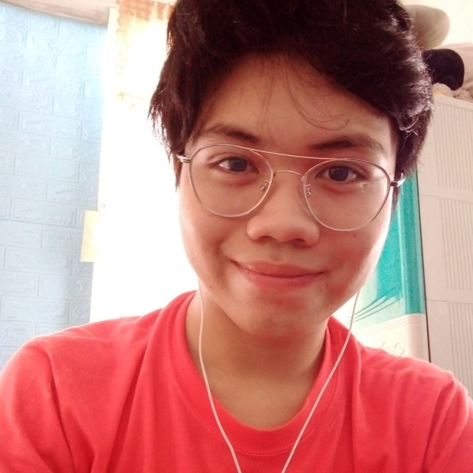

|

|
The EXO Planet Magazine's Author:
Hi! Thank you for visiting my magazine website! I am the author of The EXO Planet Magazine, Angelo James P. Dela Rama. I am a fan of K-pop from the Philippines. I actually like a lot of groups such as NCT, Itzy, Aespa, and Red Velvet, but the group that I like the most is EXO.
One of the things I admire about them is their great vocals which can be heard through their songs. I really like their harmonies! Their dancing, rapping, and acting skills are also really great. In short, they are all-rounded that is why I have a huge respect for them.
Because I want to share and help other people learn about EXO, I exerted effort to create this simple magazine website showing various information regarding EXO.
I hope that you like the magazine website I made! May God bless us all!
|